SABRES
| Photo |
Name |
Number |
Position |
Shot |
Height |
Weight |
Birthday |
Hometown |
 |
Jack Eichel |
9 |
C |
R |
6' 2" |
200 |
Oct 28, 1996 |
North Chelmsford, MA, USA |
|
Remi Elie |
81 |
LW |
L |
6' 1" |
215 |
Apr 16, 1995 |
Cornwall, ON, CAN |
| 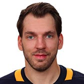 |
Zemgus Girgensons |
28 |
C |
L |
6' 2" |
211 |
Jan 5, 1994 |
Riga, LVA |
| 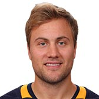 |
Johan Larsson |
22 |
C |
L |
5' 11" |
202 |
Jul 25, 1992 |
Lau, SWE |
| 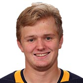 |
Casey Mittelstadt |
37 |
C |
L |
6' 1" |
202 |
Nov 22, 1998 |
Eden Prairie, MN, USA |
|
Kyle Okposo |
21 |
RW |
R |
6' 0" |
219 |
Apr 16, 1988 |
St. Paul, MN, USA |
|
Jason Pominville |
29 |
RW |
R |
5' 11" |
180 |
Nov 30, 1982 |
Repentigny, QC, CAN |
| 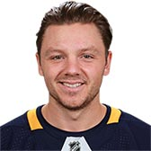 |
Sam Reinhart |
23 |
C |
R |
6' 1" |
192 |
Nov 6, 1995 |
West Vancouver, BC, CAN |
| 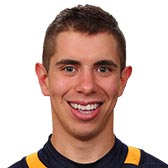 |
Evan Rodrigues |
71 |
LW |
R |
5' 10" |
176 |
Jul 28, 1993 |
Toronto, ON, CAN |
| 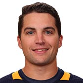 |
Conor Sheary |
43 |
LW |
L |
5' 8" |
176 |
Jun 8, 1992 |
Winchester, MA, USA |
| 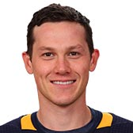 |
Jeff Skinner |
53 |
C |
L |
5' 11" |
187 |
May 16, 1992 |
Toronto, ON, CAN |
|
Vladimir Sobotka |
17 |
C |
L |
5' 11" |
189 |
Jul 2, 1987 |
Trebic, CZE |
| 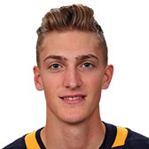 |
Tage Thompson |
72 |
C |
R |
6' 6" |
205 |
Oct 30, 1997 |
Phoenix, AZ, USA |
| Photo |
Name |
Number |
Shot |
Height |
Weight |
Birthday |
Hometown |
|
Nathan Beaulieu |
82 |
L |
6' 2" |
200 |
Dec 5, 1992 |
Strathroy, ON, CAN |
 |
Zach Bogosian |
4 |
R |
6' 3" |
226 |
Jul 15, 1990 |
Massena, NY, USA |
| 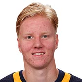 |
Rasmus Dahlin |
26 |
L |
6' 3" |
190 |
Apr 13, 2000 |
Trollhattan, SWE |
|
Matt Hunwick |
48 |
L |
5' 11" |
194 |
May 21, 1985 |
Warren, MI, USA |
 |
Jake McCabe |
19 |
L |
6' 1" |
206 |
Oct 12, 1993 |
Eau Claire, WI, USA |
| 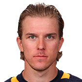 |
Casey Nelson |
8 |
R |
6' 1" |
185 |
Jul 18, 1992 |
Wisconsin Rapids, WI, USA |
| 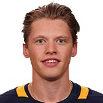 |
Lawrence Pilut |
24 |
L |
5' 11" |
180 |
Dec 30, 1995 |
Tingsryd, SWE |
|
Rasmus Ristolainen |
55 |
R |
6' 4" |
215 |
Oct 27, 1994 |
Turku, FIN |
|
Marco Scandella |
6 |
L |
6' 3" |
210 |
Feb 23, 1990 |
Montreal, QC, CAN |
| Photo |
Name |
Number |
Height |
Weight |
Birthday |
Hometown |
| 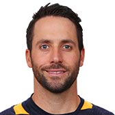 |
Carter Hutton |
40 |
6' 0" |
198 |
Dec 19, 1985 |
Thunder Bay, ON, CAN |
|
Linus Ullmark |
35 |
6' 4" |
213 |
Jul 31, 1993 |
Lugnvik, SWE |